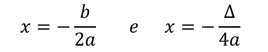
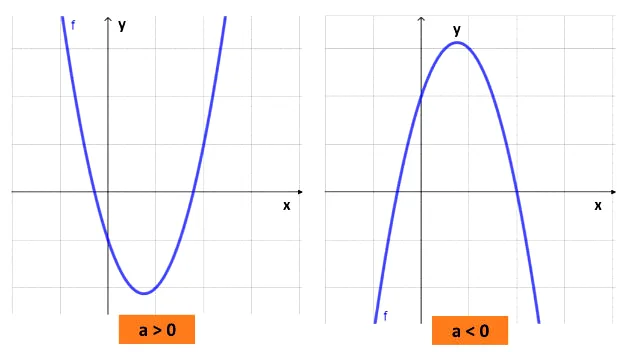

O gráfico das funções do 2º grau são curvas que recebem o nome de parábolas. Diferente das funções do 1º grau, onde conhecendo dois pontos é possível traçar o gráfico, nas funções quadráticas são necessários conhecer vários pontos.
O gráfico das funções do 2º grau são curvas que recebem o nome de parábolas. Diferente das funções do 1º grau, onde conhecendo dois pontos é possível traçar o gráfico, nas funções quadráticas são necessários conhecer vários pontos.
- Se Δ > 0, o gráfico cortará o eixo x em dois pontos;
- Se Δ = 0, a parábola tocará o eixo x em apenas um ponto.
- Se Δ < 0, o gráfico não tocará o eixo x
Existe ainda um outro ponto, chamado de vértice da parábola, que é o valor máximo ou mínimo da função. Este ponto é encontrado usando-se a seguinte fórmula:.
O vértice irá representar o ponto de valor máximo da função quando a parábola estiver voltada para baixo e o valor mínimo quando estiver para cima.
É possível identificar a posição da concavidade da curva analisando apenas o sinal do coeficiente a. Se o coeficiente for positivo, a concavidade ficará voltada para cima e se for negativo ficará para baixo, ou seja:
Assim, para fazer o esboço do gráfico de uma função do 2º grau, podemos analisar o valor do a, calcular os zeros da função, seu vértice e também o ponto em que a curva corta o eixo y, ou seja, quando x = 0.
A partir dos pares ordenados dados (x, y), podemos construir a parábola num plano cartesiano, por meio da ligação entre os pontos encontrados.